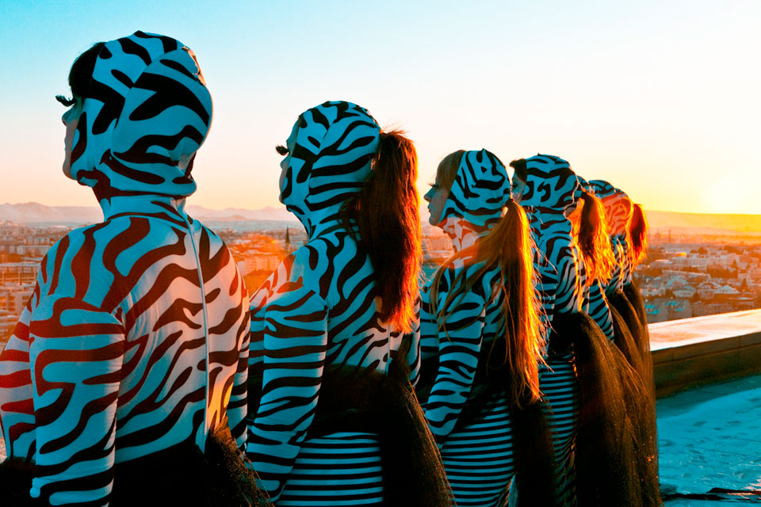
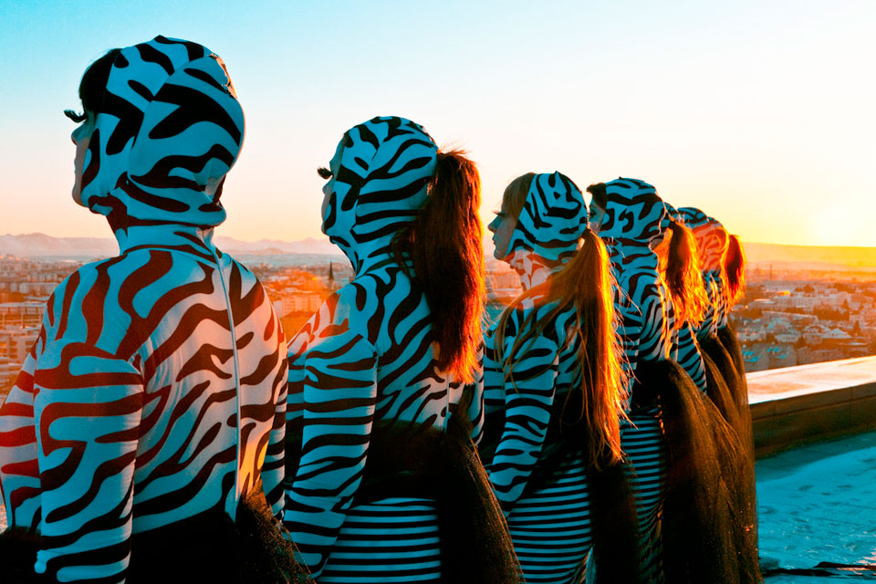

Episode 9: Goth Moths
This episode of The Weird Girls Project produced a commissioned video for Crookers. The majority of the filming took place in and on Höfðatorg – Iceland’s tallest building. The Icelandic winter proved both stunning and a challenge – the temperature dropped below minus twelve but the elongated golden sunset and sunrise threw every colour possible into the sky.
- Producer, Concept and Artistic Direction: Kitty Von-Sometime
- Technical Director, Cinematography, Editing composition and grading: Chris Rowe
- Director of Photography and Lighting: Hrafn Garðasson
- Lighting: Ari Bjarnason
- Official Photographer: Juliana Espana Keller
- Behind the Scenes Photographer: Sara Johanna
- Costumes: Svanhvit Arnadóttir, Kitty Von-Sometime & Judy Wu
- Make up: Flóra Buenano, Berglind Rögnvaldsdóttir & Alma
- Head Runner: Fríða Einarsdóttir
- Runners: Erla Gisladóttir, Hildur Hlíf Hilmarsdóttir & Anne Walsh
- Official Music: Transilvania by Crookers feat. Steed Lord
- 4th January 2010
 
